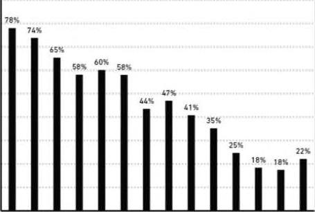

phiếu An sinh xã hội trung bình cho những người về hưu đã vượt quá 1.000 đô la một tháng được điều chỉnh theo lạm phát. Hơn một phân tư người Mỹ trên 65 tuổi được Cục điều tra dân số phân loại là sống trong cảnh nghèo đói cho đến cuối những năm 1960. Laborforce participation rate for men age 65+ 90% 80% © ,aÐ c© 29 Ð (9 se vÊ v9 © vQ a9 # é $ ®° c cá (© © j© về „# số uŸ , ,ấŸ ,d2 ,a) sô „s9 vá ,dŠ ,d sg s© Tỉ lệ những người trên 65 tuổi tham gia lực lượng lao động (ó một niềm tin phổ biến, “mọi người đều có lương hưu”. Nhưng điều này được phóng đại quá mức. Viện Nghiên cứu Quyền lợi Người lao động giải thích: “(hỉ một phản tư trong số những người từ 65 tuổi trở lên có thu nhập từ lương hưu vào năm 1975”. Trong thiểu số may mắn đó, chỉ có 15% thu nhập hộ gia đình đến từ lương hưu. Tờ New York Times viết vào năm 1955 về mong muốn nghỉ hưu ngày càng lớn, nhưng vẫn chưa thể thành hiện thực: “Nhắc lại một câu nói cũ: mọi người đều nói về việc nghỉ hưu, nhưng dường như rất ít người làm điều đó.” Mãi cho đến những năm 1980, ý tưởng tất cả mọi người đều xứng đáng, và nên được nghỉ hưu đàng hoàng mới được đưa ra. Và cách để có được sự nghỉ hưu trang trọng đó là kỳ vọng mọi người sẽ tiết kiệm và đầu tư tiền của mình. Hãy để tôi nhắc lại ý tưởng này mới như thế nào: 401(k) - phương tiện tiết kiệm xương sống cho thời kỳ hưu trí của người Mỹ - chỉ có từ năm 1978. Roth IRA mới ra đời cho đến năm 1998. Roth IRA: một tài khoản hưu trí cá nhân cho phép một người trích lập thu nhập sau thuế với một số tiền nhất định mỗi năm. Cả thu nhập trong tài khoản và tiền rút sau 59.5 tuổi đều được miễn thuế. Không ai ngạc nhiên khi nhiều người trong chúng fa rất tệ trong việc tiết kiệm và đầu tư cho hưu trí. Chúng ta không điên. Tất cả chúng ta chỉ là người mới. Tương tự đối với đại học. Tỷ lệ người Mỹ trên 25 tuổi có băng cử nhân đã tăng từ dưới 1/20 năm 1940 lên 1/4 vào năm 2015. Học phí đại học trung bình trong thời gian đó đã tăng hơn bốn lần khi điều chỉnh theo lạm phát. Ví dụ, tác động quan trọng đến xã hội giải thích tại sao rất nhiều người đã đưa ra các quyết định kém cỏi với các khoản vay dành cho sinh viên trong 20 năm qua. Không có nhiều thập kỷ kinh nghiệm tích lũy để cố gắng học hỏi.
